Observatorio de Desigualdades UDP
Encuesta periódica sobre emociones, percepciones y preferencias de la ciudadanía en Chile. Cada capítulo publica su informe, cuestionario y datos abiertos, y lo conversamos en un podcast.
Investigadoras e investigadores de la encuesta conversan sobre los resultados de cada capítulo.
En 2025 medimos cómo se sentía Chile antes de votar. En 2026 medimos qué cambió.
Ocho capítulos, de mayo de 2025 a enero de 2026.
Te avisamos cuando salga un nuevo capítulo, informe o episodio del podcast. Sin spam.
Instituto de Investigación en Ciencias Sociales y Humanidades, Universidad Diego Portales.